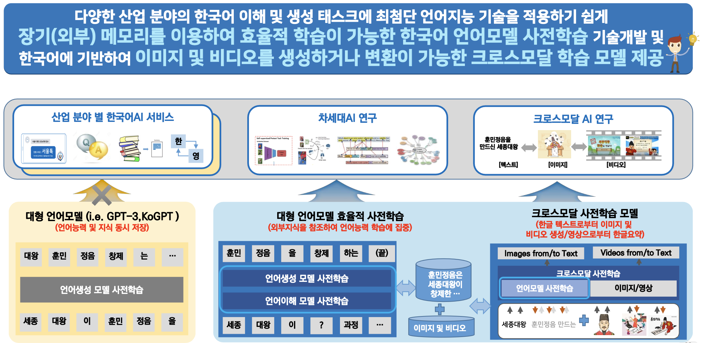

효율적 사전학습이 가능한 크로스모달 대형 모델 사전학습 기술개발
연구기간: 2022.08 ~ 2025.12


기술문의: 이용주 시각지능연구실장 (yongju@etri.re.kr), 임수종 박사(isj@etri.re.kr)
연구내용
단계별 연구내용
- (1단계 연구목표) ‘닫힌 지식’을 이용하는 기존 언어모델의 한계를 극복하기 위해 ‘열린 지식’을 외부 메모리 형태(외부 지식을 구조화한 정보 형태)로 포함하여, 한국어 이해 및 생성 태스크에 최첨단 언어지능 기술을 적용하기 쉽게 도와주는 한국어 언어모델 기술 설계/개발 및 한국어에 기반하여 이미지 및 비디오를 생성하는 크로스모달 학습 기술 설계/개발
- (2단계 연구목표) 외부 메모리를 포함한 한국어 언어모델에 기반하여 크로스모달 사전학습 기술을 개발, 공개하고 이를 바탕으로 크로스모달 응용 태스크 기술을 개발, 보급하여 국내 인공지능 생태계 활성화에 기여
연구실적(논문/학술대회)
[International Conferences]
- Chunyuan Li, Haotian Liu, Liunian Harold Li, Pengchuan Zhang, Jyoti Aneja, Jianwei Yang, Ping Jin, Houdong Hu, Zicheng Liu, Yong Jae Lee, Jianfeng Gao, “ELEVATER: A Benchmark and Toolkit for Evaluating Language-Augmented Visual Models”, NeurIPS 2022, [Link]
[Domestic Conferences and Articles]
- 허정, 배경만, 임수종, "KorBERT와 Popularity 정보에 기반한 한국어 개체연결", 한글 및 한국어 정보처리 학술대회 [Link]
- 신종훈, 이요한, 권오욱, 김영길, "불확실성 정량화 기반 OOD 검출을 통한 대화 의도 분류 모델의 성능 향상", 한글 및 한국어 정보처리 학술대회 [Link]
- 이용주, "초거대 AI 모델 연구동향", 주간기술동향 2078호 [Link]
[Promotions]
- Workshop on Computer Vision in the Wild, ECCV 2022,[Link]
- 누구나 쓸 수 있는 ‘초거대 AI’, 정부서 개발한다, THE AI, [Link]
[Open SW]
- ELEVATER(Evaluation of Language-augmented Visual Task-level Transfer),[Link]
Acknowledgement
This work was supported by the Institute of Information & communications Technology Planning & Evaluation(IITP)
grant funded by the Korea government(MSIT)
(No. RS-2022-00187238, Development of Large Korean Language Model Technology for Efficient Pre-training)